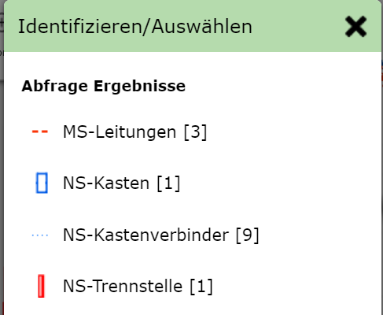

Abfragen¶
Eine Abfrage erfolgt durch klicken auf ein Geo-Objekt mit einem entsprechenden Abfragewerkzeug. Die unterschiedlichen Abfragefragewerkzeuge befinden sich im Werkzeugkasten im Abschnitt Abfragen.
Diese Abschnitt wird später noch behandelt. Hier soll einmal nur das Grundprinzip des Abfragen gezeigt werden bzw. das Abfrage mit den Standard Werkzeug.
Standard Werkzeug¶
Öffnet man den Kartenviewer ist in der Regel das Standard oder Default Werkzeug aktiv. Dieses Werkzeug ist immer aktiv, wen kein anderes Werkzeug aus dem Werkzeugkasten aktiv ist.
Am Desktop ist dieses Werkzeug am Mauszeiger ersichtlich: Zeigefinger mit blauem (i)
Der Zeigefinger sollte anzeigen, dass mit dem Standard Werkzeug in der Kartenausschnitt verschoben werden kann. Das blaue (i) steht für Identifizieren von Geo Objekten.
Mit dem Standard Werkzeug können folgende Funktion ausgeübt werden:
Mit gedrückter Maustaste den Kartenauschnitt verschieben
Mit den Mausrad den Kartenausschnitt vergrößern/verkleinern
Durch Klick die Sachdaten eines Geo-Objekts Abfragen
Bemerkung
Die ersten beiden Punkte funktionieren auch bei fast allen Werkzeugen aus dem Werkzeugkasten
Bemerkung
Auf (mobilen) Geräten mit Touch Bedienung funktioniert der Klick in der Karte über das Klick Bubble Werkzeug (siehe Abschnitt…) Der Vorteil der Klick Bubble ist die Vermeidung von unabsichtlichen Klicks beim Navigieren und die höhere Präzision beim klicken
Klickt man mit dem Werkzeug in die Karte, werden für die gewünschten Ort die Geo-Objekte aller Themen abgefragt, für die eine Abfrage zulässig ist (und die auch aufgrund der Themenschaltung und des Maßstabes sichtbar sind).
War die Abfrage erfolgreich und eindeutig, werden die Ergebnisse gleich angezeigt. Die Abfrage ist nicht eindeutig, wenn Geo-Objekte aus unterschiedlichen Themenebenen gefunden werden. Ist das der Fall öffnet sich ein Dialog, in dem die das gewünschte Thema festgelegt werden kann:
Mit der Bezeichnung der Themenebenen wird auch noch ein Symbol aus der Legende des Themas angezeigt, das hilfreich sein kann, die gewünschte Themenebene auszuwählen. Außerdem wird noch zusätzlich (in eckigen Klammern) angezeigt, wie viele Objekte von dieser Abfrage betroffen sind.
Wählt man eine Themenebene aus, wird die Abfrage eindeutig und die Ergebnisse werden angezeigt.
Bemerkung
Der hier beschrieben Zwischenschritt ist notwendig, weil im Kartenviewer immer nur die Abfrage- und Suchergebnisse von genau einer Themenebene gleichzeitig angezeigt werden können.